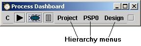
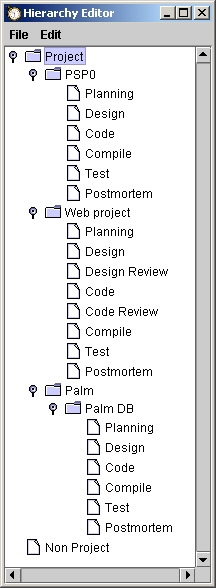
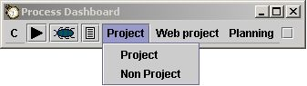
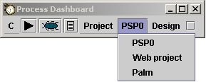
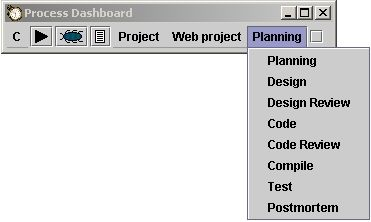

The dashboard attempts to keep itself as small as possible to allow the bulk of precious screen real estate to be used for the actual business of software development. As different sections of the project tree are selected via the hierarchy menus, the dashboard will automatically resize itself to accomodate the menu depth necessary to show the chosen process phase.
The hierarchy menus are the way you choose the current working project. This example shows the dashboard ready to work on the Design phase of a PSP0 project. The hierarchy menus show each level in the current project tree all the way down to the current phase.
To better illustrate navigation with the hierarchy menus, a fake set of projects will be shown. The project tree is shown below in a screenshot from the hierarchy editor. For more information on putting together a project hierarchy and the use of the hierarchy editor see the Planning a project and Using the hierarchy editor help topics.
|  |
To better illustrate navigation with the hierarchy menus, this fake set of projects will be used. The project tree is shown in a screenshot from the hierarchy editor. For more information on putting together a project hierarchy and the use of the hierarchy editor see the Planning a project and Using the hierarchy editor help topics. This project hierarchy shows two top level project categories: "Project" and "Non Project". These are the two categories given as default when the dashboard is first run. Under "Project" there are two projects defined: "PSP0" and "Web project" along with a hierarchy node: "Palm". Presumably this developer will be doing several projects in the future that fall under the logical category of "Palm". At this point only one is shown: "Palm DB". The phases shown under each project are whatever phases are defined for the process that the project is based upon. In this example, the "PSP0" and "Palm DB" projects were created from the PSP0 template. The "Web project" was created from the PSP2.1 template. |
When the first hierarchy menu is selected, it will show all the entries in the project hierarchy that are defined at that level. In this case it shows the two default nodes "Project" and "Non Project".
Selecting the second hierarchy menu shows the entries defined at that level under the selection from the first menu. In this case, the user has selected "Project" on the first menu, so the second menu shows the children of "Project" in the project hierarchy.
Selecting any menu in the set of hierarchy menus will show the entries defined as children under the selection on the menu to its left. This final example shows the PSP 2.1 process phases that are defined for the "Web project".
